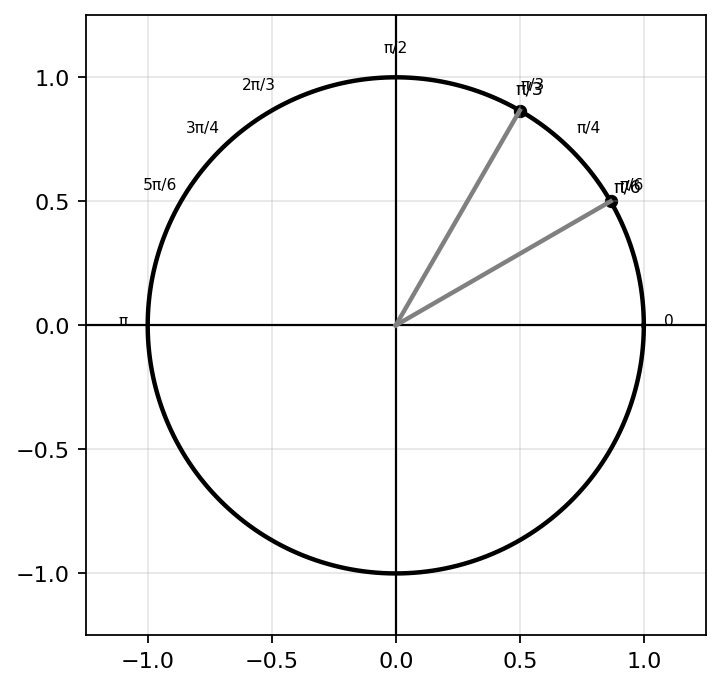
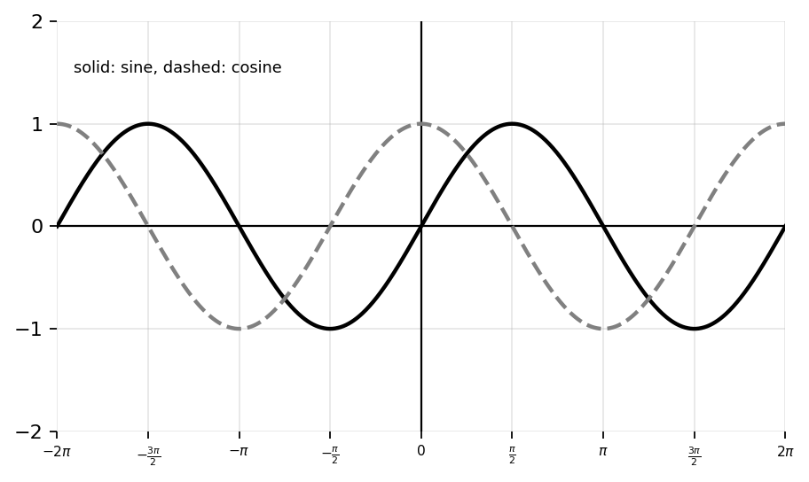
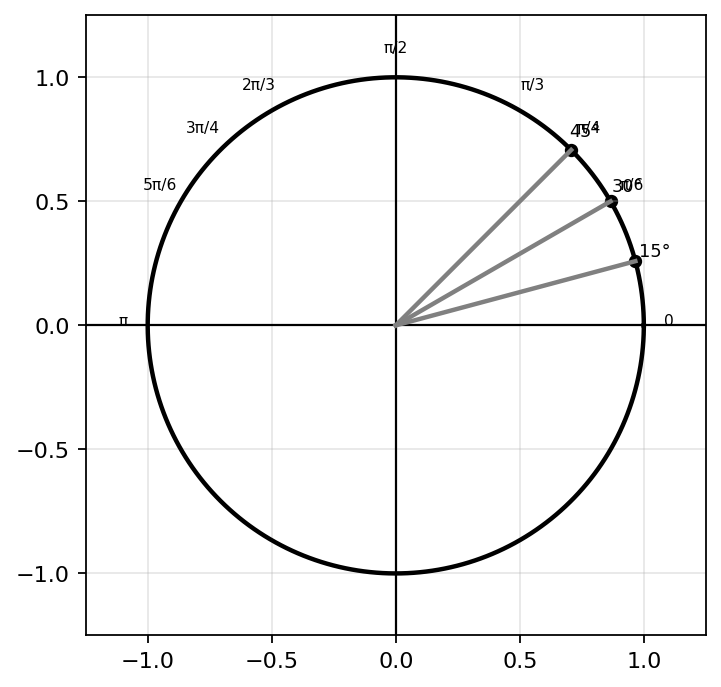
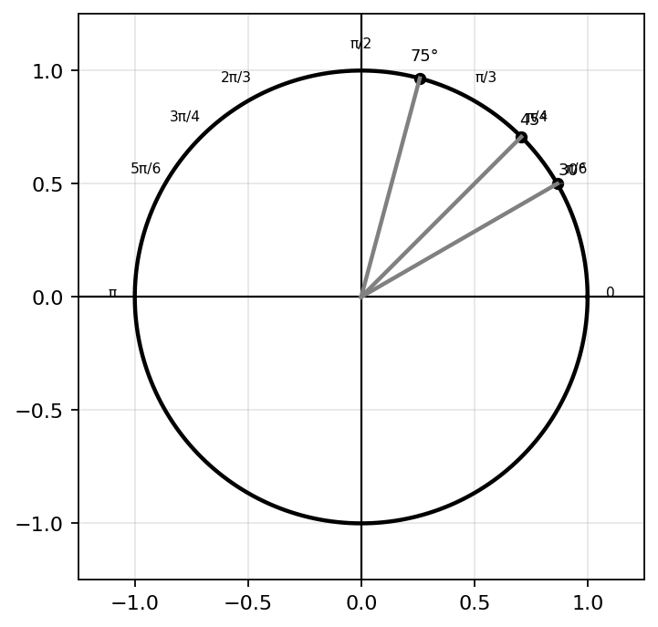
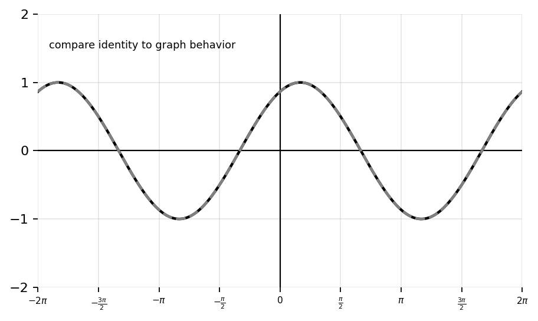

State the Pythagorean Identity involving sine and cosine.
Rewrite \(1-\sin^2(x)\) using a Pythagorean identity.
Rewrite \(1+\tan^2(x)\) using a Pythagorean identity.
Rewrite \(\sec^2(x)-1\) using a Pythagorean identity.
Simplify: \[\sin^2(x)+\cos^2(x)\]
Simplify: \[\frac{\sin(x)}{\cos(x)}\]
Evaluate exactly: \[\sin\left(\frac{\pi}{6}+\frac{\pi}{3}\right)\]
Evaluate exactly: \[\cos\left(\frac{\pi}{4}-\frac{\pi}{6}\right)\]
Evaluate exactly: \[\sin(75^\circ)\]
Evaluate exactly: \[\cos(15^\circ)\]
Fill in the blanks.
Determine whether the statement is true or false: \[\sin(A+B)=\sin(A)+\sin(B)\]
Determine whether \(\sin^2(x)-\cos^2(x)\) can be simplified using a Pythagorean identity directly. Explain.
Simplify: \[\frac{1-\cos^2(x)}{\sin(x)}\]
Simplify: \[\frac{\sec^2(x)-1}{\tan(x)}\]
Simplify: \[(\sin(x)+\cos(x))^2\]
Simplify: \[(\sin(x)-\cos(x))^2\]
Rewrite \(\sin(x)\cos(x)\) using a double-angle identity.
Evaluate exactly: \[\sin(105^\circ)\]
Evaluate exactly: \[\cos(105^\circ)\]
Evaluate exactly: \[\tan(75^\circ)\]
Use sum/difference identities to evaluate \(\sin\left(\frac{5\pi}{12}\right)\).
Use sum/difference identities to evaluate \(\cos\left(\frac{7\pi}{12}\right)\).
Rewrite \(\cos(A)\cos(B)-\sin(A)\sin(B)\) as a single trig function.
Rewrite \(\sin(A)\cos(B)+\cos(A)\sin(B)\) as a single trig function.
Simplify: \[\frac{\cos(x)}{\sec(x)}+\frac{\sin(x)}{\csc(x)}\]
Verify: \[\frac{1-\cos^2(x)}{\sin(x)}=\sin(x)\]
Verify: \[\frac{\tan(x)\cos(x)}{\sin(x)}=1\]
Explain why \(\sin^2(\theta)+\cos^2(\theta)=1\) is true geometrically using the unit circle.

A student claims \(\sin(A+B)=\sin(A)+\sin(B)\). Use exact values to show why this is false.
Verify: \[\frac{\sec(x)-1}{1-\cos(x)}=\sec(x)\]
Explain each major step.
Verify: \[\frac{\csc(x)-\cot(x)}{\sin(x)}=\frac{1}{1+\cos(x)}\]
A student simplifies \(\sin^2(x)+\cos^2(x)\) as \((\sin(x)+\cos(x))^2\).
Explain why \(\sin(75^\circ)=\cos(15^\circ)\) using cofunction relationships, a unit-circle diagram, and graph behavior.

Verify: \[\frac{\tan(x)}{\sec(x)}=\sin(x)\]
Use identities to rewrite \(\sin^2(x)-\cos^2(x)\) in two different forms.
A student says, “Pythagorean identities only work with sine and cosine.” Respond using examples.
Compare \(\sin(A+B)\) and \(\sin(A-B)\). Explain structurally how the formulas are similar and different.
Verify: \[\frac{1+\tan^2(x)}{\sec^2(x)}=1\]
Use exact values and identities to prove: \[\sin(15^\circ)=\frac{\sqrt6-\sqrt2}{4}\]

Create a trigonometric identity that simplifies to \(1\). Your identity must use at least two of the following: reciprocal identities, quotient identities, or Pythagorean identities. Then verify it line by line and explain why each rewrite is valid.
Create a sum/difference identity problem whose exact answer contains radicals. Use angles that are not basic unit-circle angles by themselves, such as \(15^\circ\), \(75^\circ\), \(\frac{5\pi}{12}\), or \(\frac{7\pi}{12}\). Then solve it exactly.
Design an error-analysis problem involving \(\sin(A+B)\).
Create a trig expression that can be simplified in two different valid ways. One method should use a Pythagorean identity and the other should use quotient or reciprocal identities. Show both approaches and explain which is more efficient.
Create a real-world periodic scenario where two shifted sinusoidal quantities are combined. Write an expression using a sum or difference identity to simplify or interpret the model, then explain what the simplified expression means in context.
Design a challenge problem involving exact trig values, sum/difference identities, radicals, and unit-circle reasoning. Your problem must require decomposing an angle into two special angles. Then solve it completely.

Create a comparison task involving \(\sin(A+B)\) and \(\cos(A+B)\). Include two specific angle pairs, ask students to compute both expressions, and require a written comparison of how the formulas are structurally similar and different.
Create a multi-representation problem involving unit-circle coordinates, identities, exact values, and graph behavior. Use a specific angle such as \(\frac{5\pi}{12}\). Require students to:

A student claims, “Memorizing identities is enough to understand trigonometry.” Critique this statement using one example from geometry, one from graph behavior, and one from exact-value calculation.
Create a verification problem that requires multiple identities, strategic rewriting, and careful algebra. Your identity must include at least one reciprocal function and one Pythagorean identity. Then provide a full justification.